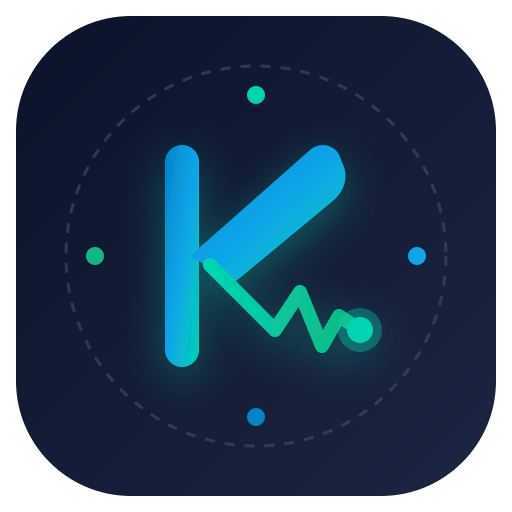

Arazoa eta Irtenbidea
🚨 Zer arazo ikusten dugu inguruan?
Biztanleriaren zahartze azkarrak eta gaixotasun kronikoek ospitaleak eta lehen arretako zentroak gainezka jarri dituzte. Pazienteek etxera itzultzean ez dute jarraipen kliniko digitalizaturik izaten, eta errehabilitazio-ariketak egiteari uzten diote motibazio eta kontrol faltagatik.
💡 Zer trebetasun bihurtzen dugu negozio?
Biomedikuntza Ingeniaritza (seinale fisiologikoak, EKG, sentsorika eta MDR araudi medikoa) eta Multiplataforma Garapena (Flutter, Android, iOS, BLE sinkronizazioa eta FHIR interoperabilitatea) bateratzen ditugu.
01. Nor da bezeroa?
B2B eta B2B2C: Osakidetza, ospitale eta klinika pribatuak (Kardiologia, Traumatologia, Neurologia), aseguru-etxeak (IMQ, Sanitas) eta errehabilitazio-zentroak.
02. Zer arazo konpontzen du?
Ospitaleratze errepikatuak %35 murrizten ditu, errehabilitazio-epeak laburtzen ditu eta etxeko monitorizazioa seguru, automatiko eta fidagarri bihurtzen du.
03. Zergatik ordainduko luke inork?
Ospitaleek ohe-kostuetan milaka euro aurrezten dituztelako eta arrisku kliniko larriak aldez aurretik saihesten dituztelako (ROI azkarra eta garbia).
Misioa, Bisioa eta Baloreak
🎯 Gure Misioa (Egunerokotasuna)
"Ingeniaritza biomedikoa eta software multiplataforma adimenduna uztartzea, pazienteen zaintza eta errehabilitazioa ospitaleko hormetatik harago eramateko, osasun-arreta irisgarri, pertsonalizatu eta fidagarri bat bermatuz."
Laburra, inspiratzailea, originala eta merkatuko benetako hutsunera zuzendua.🔭 Gure Bisioa (Etorkizuneko Helmuga)
"2030erako Hego Euskal Herrian eta Europan osasun digitaleko eta tele-monitorizazioko erreferente nagusia bihurtzea, gailu medikoen eta sistema klinikoen arteko zubirik seguruena eraikiz."
Etorkizuneko proiekzio argia, errealista eta anbizio handikoa.Balio Estrategikoak (Enpresaren ADN-a):
Ebidentzia klinikoan eta MDR araudi medikoan (EB 2017/745) oinarritua.
Erabilerraztasun maximoa adineko pertsonentzat (Zero-Touch).
GDPR, ENS Altua eta muturreko zifraketa osasun-datuetan.
Basque Health Cluster, BioGipuzkoa eta medikuekin ko-diseinua.
Target (Xede Publikoa)
👥 B2C Erabiltzaile Finala (Pazientea & Zaintzailea)
- Demografikoak: 50-85 urte bitarteko pertsonak (bihotz-arazoak, iktus ondorengoa edo errehabilitazioa).
- Geografikoak: Euskadi eta Nafarroa (hiriguneak zein landa-eremuak, non ospitalera joatea zailagoa den).
- Psikografikoak: Etxean segurtasunez bizi nahi dutenak, autonomia bilatzen dutenak baina lasaitasuna behar dutenak.
- Jokabidezkoak: Eguneroko ariketak eta neurketak modu errazean bete nahi dituztenak.
🏥 B2B Bezero Eroslea (Erakunde Sanitarioa)
- Demografikoak: Ospitaleetako Zuzendari Medikoak, Berrikuntza Buruak (CIO/CMIO), Zerbitzu Buruak (40-62 urte).
- Geografikoak: Osakidetza, IMQ, Poliklinika Gipuzkoa, Quironsalud, Matia Fundazioa.
- Psikografikoak: Kalitate kliniko handiena eta zentroaren efizientzia ekonomikoa bilatzen duten liderrak.
- Jokabidezkoak: Alerta-nekea (alarm fatigue) ekiditea eta pazienteen birsartzeak %35 murriztea bilatzen dutenak.
Balio Proposamena eta Konparaketa
| Irizpideak | Kontsumo Wearableak (Fitbit, Apple) | Ospitaleko Makina Zaharrak | KuraLink SaMD Plataforma |
|---|---|---|---|
| MDR / CE Marka Medikoa | EZ (Fitness maila) | BAI | BAI (SaMD Klasea IIa) |
| Etxean Erabiltzeko Egokia | BAI | EZ (Ospitalean bakarrik) | BAI (Zero-Touch BLE) |
| Multiplataforma (Mugikorra + Web) | Mugatua | EZ | BAI (Flutter + Hodeia) |
| Osabide / FHIR Integrazioa | EZ | Oso zaila eta itxia | BAI (Jatorrizko FHIR API) |
| Adinekoentzat Irisgarritasuna | Konplexua | Teknikaria behar du | OSO ERRAZA (Piztu eta prest) |
Marka, Identitatea eta Enpresaren Irudi Erreala
Zergatik KuraLink? (PDF 16. orrialdea):
- Gogoratzeko erraza: 3 silaba fonetiko sendo: Ku-ra-Link.
- Ahoskatzeko eta idazteko erraza: Euskaraz, gaztelaniaz zein ingelesez naturala.
- Jarduerarekin lotuta: Kura (osasuna/zaintza) + Link (multiplataforma zubia).
- Beste markekiko bereizlea: Euskal nortasuna eta nazioarteko teknologia bateratzen ditu.
Kolore Korporatiboak:
App Isotipoa / Ikonoa:

'K' letra + EKG bihotz-taupada + IoT nodoak
Enpresaren Irudi Erreala: Miramongo Egoitza eta I+G Laborategia

KuraLink Health Technologies: Ingeniari biomedikoak eta DAM multiplataforma garatzaileak Miramongo laborategian lanean (Donostia).